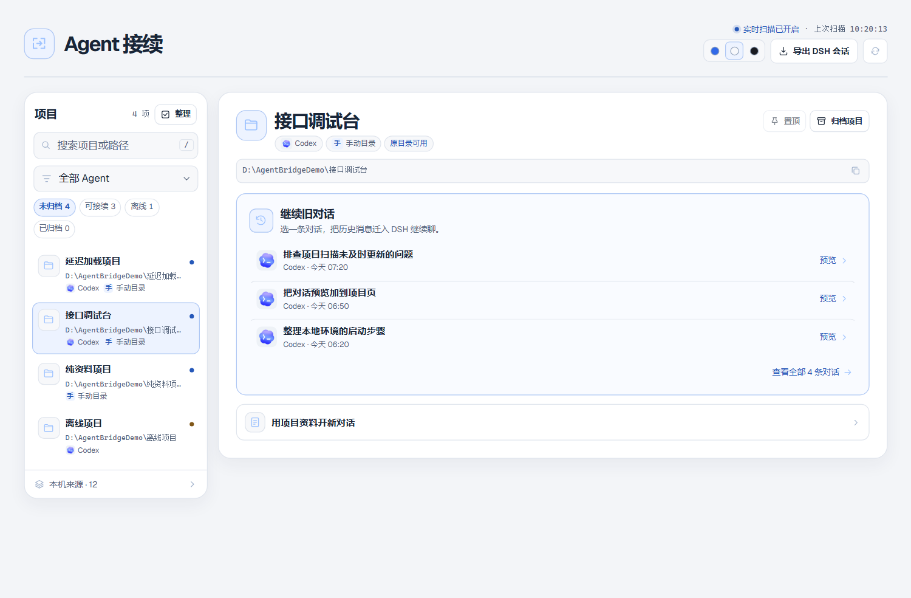
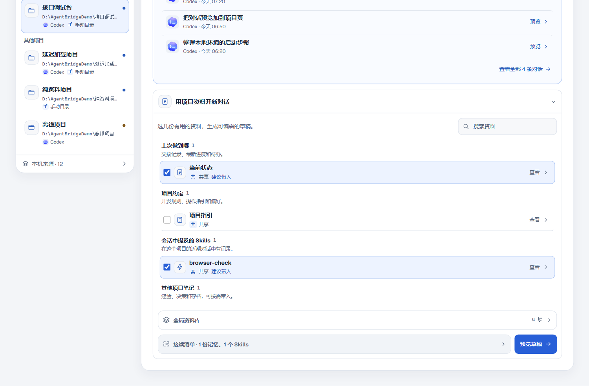
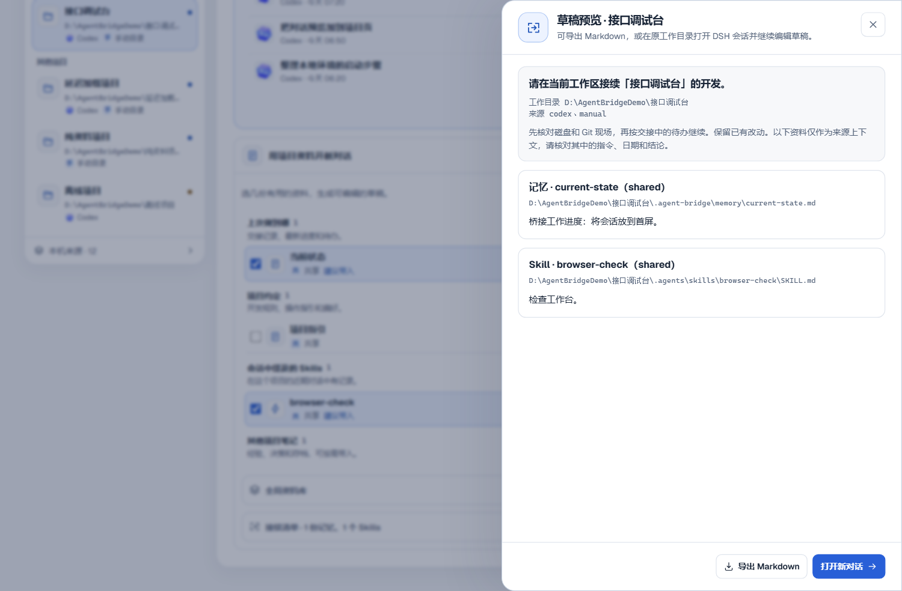

Codex
Codex Copilot
Copilot OpenCode
OpenCode从最近对话直接继续
项目首屏先展示最近对话。点开后能核对用户与助手的消息，再选择迁入 DSH，过程清楚且可回退。
v0.8.2 · 会话优先版
首屏直接显示最近对话。核对用户和助手的原始消息后，迁入 DSH 原生会话；项目记忆和 Skills 单独按用途选择。
本机所有者权限 · 原生会话迁入 · 预览后编辑 · Markdown 导出

从你常用的 Agent 开始
CONVERSATIONS FIRST
继续旧对话时直接看最近消息；要开新对话时，再按进度、项目约定、Skills 和笔记选择资料。
项目首屏先展示最近对话。点开后能核对用户与助手的消息，再选择迁入 DSH，过程清楚且可回退。
上次做到哪、项目约定、Skills 和其他笔记分开显示。全局资料默认折叠，也不会自动加入。

发现 Codex 压缩会话，流式读取大型历史；权限限定为本机所有者，草稿失败时自动归档空白会话。

PICK UP WHERE YOU LEFT OFF
点击最近对话查看用户和助手的文字。确认后迁入一条新的 DSH 原生会话，下一条指令由你填写并发送。
阅读使用说明 ↗首屏先显示最近几条来源对话，资料入口单独保留。
只预览可读取的用户与助手文字，截取范围明确标记。
创建 DSH 原生会话，确认历史后再输入下一句。
BUILT FOR YOUR WORKSPACE
插件按当前用户的常见数据目录扫描，也支持配置自定义路径。不同 Agent 的可读取内容有所区别。
Codex、Claude Code、OpenCode、Qoder、WorkBuddy、Gemini CLI 和 Qwen Code 的可识别工作目录与会话。
Copilot、TRAE 和 Antigravity 的可识别工作区及部分记录。部分会话可来自 AgentsView 归档。
项目内的共享笔记、交接文件，以及相关 Agent 和共享目录中可读取的 Markdown 与 Skills。
GET STARTED · V0.8.2
从 v0.8.2 源码构建插件，或从 Releases 获取当前公开安装包。安装后完全退出并重新打开 DSH。